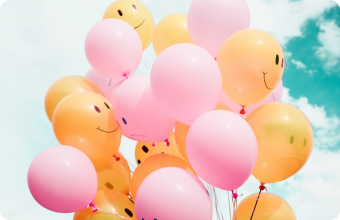

Розважальний
Це вікторина найпростішого формату. Застосовуються для залучення користувачів до проекту,
збільшення охоплення та лояльності його аудиторії, підвищення впізнаваності компанії, розміщення
нативної реклами

Продавець
Ці тести створюються посилення потреби людини у певних товарі чи послузі. Такі опитувальники
припускають хороше знання пропонованого продукту та інтересів клієнтів
Залучаючий
У цьому випадку продукт не пропонується прямо, такі тести швидше допомагають відвідувачеві
зрозуміти, що йому хочеться. Товар або послуга згадується як би ненароком, між справою.

Для захоплення лідів
Це анкета, яка заповнюється для отримання інформації. Відмінність квізів Для захоплення лідів від
інших у тому, що результат проходження тесту не видається відразу, а надсилається на email.